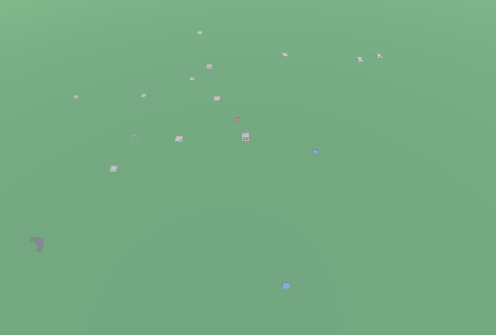

Procedural Pursuit - Dissertation
How Does the Order of Procedural Generation Affect Gameplay?
For my final year project, I wanted to it to focus on something related to PCG. I had spent the summer playing around and learning about procedural content, and wanted to develop on to that through this year. After looking into research of the current area, I noticed there was a lack of research around how two procedural systems interactions can affect the gameplay. With this in mind, I decided to create a quest system, for the narrative, and a city generator, for the envioment to play in. I ended up finishing this project with 70% (1st).
The Village Generator
The Village Generator deals with creating an envioment for the player to play around with. From the vary begining I wanted to include "disticts" which would control the type of buildings that would be created. This would then mean I could create an area for monsters or enemys to spawn from, or an area for the player to interact with NPC's like shopkeepers or gaurds. By the end of the project there we're 3 districts overall, a kingdom district which would be a place that gaurds would spawn from or walk to after their patrols, a housing area where NPC's would be coming and going from, and a ruins area for enemies to spawn from. This could then be used closely with the Quest Generator to help drive the narrative forward.
The first thing I worked on was defining space for buildings, parths and empty space. I used a grid and with the center always being empty. I then shuffled all unsearched tiles, selecting them and declaring them as building space or empty space, using a flood fill algorithm to check whether the closed tile would affect paths or creating an unreachable empty space. After declaring space for buildings and empty space, I created a building area which is formed from connected building spaces. From this I could then mark any empty cells that are surround a building area as a path.

With the building areas, I then used WFC to fit the buildings together to form a city block. Each building has a defined size which can then rotated around to fit the rotation of the path which forms the sides of the city block. Each district has its only list of buildings that spawn in that area to help organize which buildings can spawn in a specific area. Using this system, I would be able to add more disticts easily. Each building can also be constained to its possition, limiting buildings to being able to spawn in the corners or sides of each city block. This meant that I could fit less blocky shaped buildings into the corners to improve the looks and make it feel less squared.
After Generating buildings, I wanted add depth into the evnioment around the buildings, so added in some simple layered noise to create some hills and bumps, increasing the intensity of the noise at the edges of the city to make the city feel nested inside a valley, keeping the player inside the city. I also spawned varients of trees on the terrain to break up the line of sight for the player.

Quest Generator
The Quest Generator uses "Motvies" which define the purpose or reasoning for the quest in the game world. These Motives can be like defend the village, collect x item for person y or talking to several villagers. For this project I focused more around Motives that would result in an action game moment for the player to play through however is open enough to add other Motives for other quest types. The quest is set up as a node tree which is then used to spatial set up the quest in the game envioment. This creates "Islands and Bridges", where each Island is an important part of the quest, such as where you fight monsters, and a Bridge is the area inbetween which connects two quest parts together. This means that when generating the quest first, I can use the node tree to generate districts and areas for the quest to play out in, and when generating the envioment first, I can use the roads as a way to navigate to new areas where quest actions can be played out in.
The current implementation of this quest system lacks on generating a context to fit the quest in. The quest is a list of actions for the player to complete in its current state, which is then displayer to the player such as steal this item for player x, or kill these enemies, however implementing a sentence generator, or even a phrase picker which would be weighted against the current game state and the action, could help bring a better context for the quest in the game world.
Reflection
Overall this project has be really fun, blah blah blah, look to the future.
There are several improvements that I would do to this project. Mostly the project works well however near the end it got more difficult to add smaller details to the envioment, like papers on the floor, or bumps in the envioment to make it feel less flat. Generating the envioment first before the city, and then letting the city flatten and adapt to the shape of the terrain would feel better and actually like the city was intergrated into the envioment. Districts should be merged together more, and not defined by the city block in which they lay in.